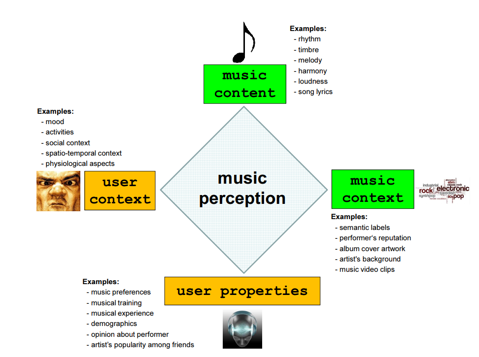

from IPython.display import Image
Image("../img/1.intro/music_perception.png", width=400)
What Is MIR?
Cheonghyo Cho
February 20, 2023
대체로 MIR(Music Information Retrieval) 연구 분야는 오디오 신호, 기호 표현 또는 웹 페이지와 같은 소스 등으로부터 음악의 의미 있는 특징을 추출하고 추론하며, 이러한 특징을 사용하여 음악을 인덱싱(indexing)하고, 정의한 다양한 검색 체계(예: 내용 기반 검색, 음악 추천 시스템 또는 대규모 음악 컬렉션을 탐색하기 위한 사용자 인터페이스 등)를 개발하는 데 목표를 둔다.
MIR 연구 분야는 30년도 되지 않은 짧은 역사를 가지고 있지만 최근 들어 많은 관심을 끌고 있는 분야이다. 그 이유는 1990년대말의 오디오 압축 기술이 발달하고 컴퓨터의 계산 능력이 크게 향상되었고, 따라서 음악 특징들을 추출할 수 있는 비용이 감소했기 때문이다. 또한 모바일로 음악을 자유롭게 감상할 수 있게 되며, 스포티파이(Spotify), 애플 뮤직(Apple Music), 그루브샤크(Grooveshark), 디저(Deezer) 등의 스트리밍 서비스들이 탄생하며 음악의 소비가 훨씬 자유로워진 점도 있다.
MIR에는 다양한 응용 연구가 존재한다. 다음의 응용 방법을 살펴보자
위 그림은 2014년에 변가람, 김무영. “Music Information Retrieval 기술 동향”에서 조사한 MIR 분야별 연구 동향이다.
https://en.wikipedia.org/wiki/Music_information_retrieval
Byeon, Ga-Ram, and Mu-Yeong Kim. “Music Information Retrieval 기술 동향.” Broadcasting and Media Magazine 19.1 (2014): 31-36.
Knees, Peter, and Markus Schedl. Music similarity and retrieval: an introduction to audio-and web-based strategies. Vol. 9. Heidelberg: Springer, 2016.
Schedl, Markus, Emilia Gómez, and Julián Urbano. “Music information retrieval: Recent developments and applications.” Foundations and Trends® in Information Retrieval 8.2-3 (2014): 127-261.